1. Use the bash script to install NodeSource:
curl -sL https://deb.nodesource.com/setup_12.x | sudo -E bash -
2. Typing the command: sudo apt install -y nodejs
3. Verify the installation by checking which version of Node.js and
npm(node package manager)you have installed
on the system with the following:
node -v
npm -v
4. To install Angular.js command line interface(cli): sudo -i npm install -g @angular/cli
5. It will ask if you want to share data with Angular team: Typing N for no
6. To check Angular CLI version: ng version
7. To see what kind of available commands there: ng help
(if may not be possible to use them since you will need
to have a project which is not important for our project)
8. To make directory: mkdir helloworld
9. To change directory: cd helloworld
10. To initialize a project: npm init
11. Click enter key three times to get “entry point:(index.js)”
12. Typing app. js to replace index.js
13. Click enter key five times, it will ask “Is this OK? (yes)”,
click enter key one more time to get a command line
14. To Install Express.js in the myapp directory and
save it the dependencies list: npm install express --save
15. Open a text editor: nano app.js
16. Copy and paste the following code:
var express = require('express');
var app = express();
app.get('/', function (req, res) {
res.send('Hello there! Have a Great Day!!!');
});
app.listen(3000, function () {
console.log('Example app listening on port 3000!');
});
17. To exit: ctrl X
18. To save: Y
19. To go back to shell: Click enter key
20. Go to Google Cloud Platform
21. In the search products and resources, type firewall and choose Firewall(VPC network)
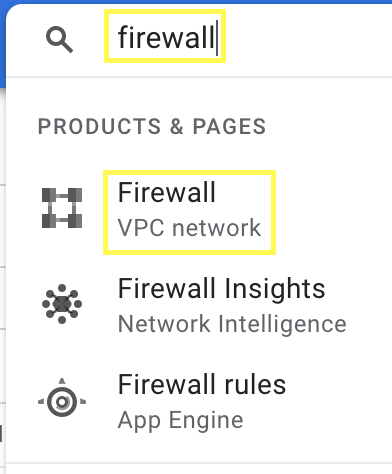22. Under the search box, click CREATE FIREWALL RULE
23. In the name: Typing firewall-3000 (3000 is a port that you will need to open on a Google Cloud Platform)
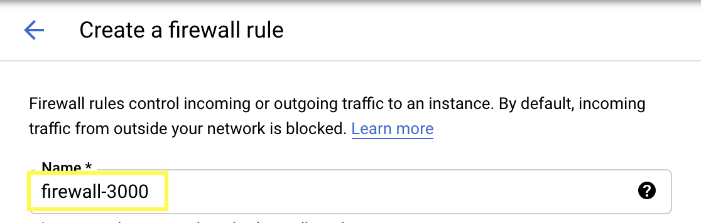24. Change Target to All instances in the network
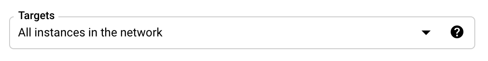25. In Source IP ranges typing: 0.0.0.0/0

26. In Protocols and ports(this will open port 3000): check tcp and typing 3000
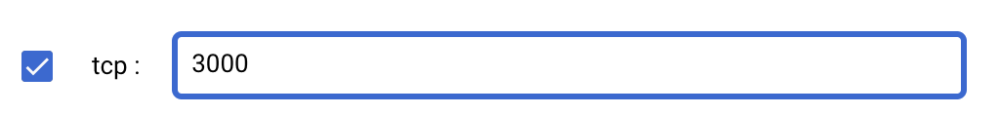27. Click CREATE
28. Go to Hamburger icon -> Computer Engine -> VM Instances
29. Click the External IP
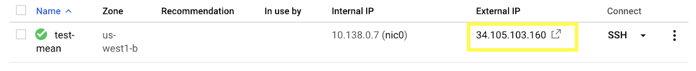30. It will show an error message
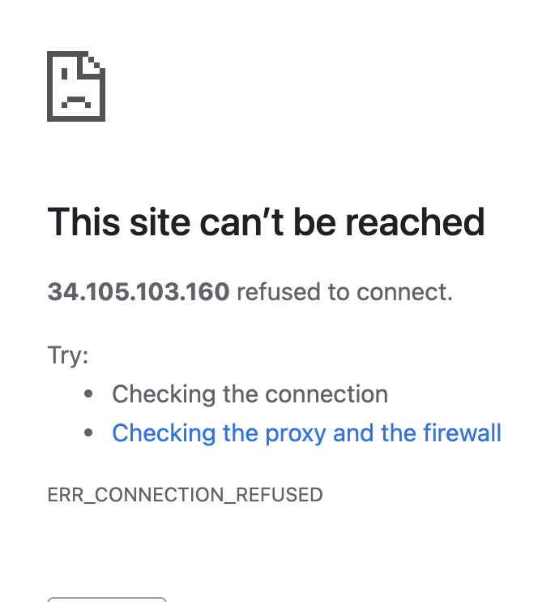31. Go back to shell
32. Use command: node app.js ( It will show “ Example app listening on port 3000”)
33. After running the command, add :3000 the end of your server’s external IP EX) http://34.105.103.160:3000 (do not copy and paste example, you have to use your external IP) (remember do not use https)
34. You will see the message
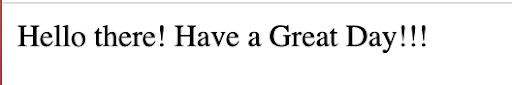35. To exit the Express.js: ctrl c
36. To move up one directory: cd .. (there is a space between cd and dots)
Use this tutorial to install MongoDB 4.4 Community Edition on LTS (long-term support) releases of Ubuntu Linux using the apt package manager.
37. Import the public key used by the package management system:
wget -qO - https://www.mongodb.org/static/pgp/server-4.4.asc | sudo apt-key add -
38. Create the /etc/apt/sources.list.d/mongodb-org-4.4.list file for Ubuntu 18.04 LTS(Bionic):
echo "deb [ arch=amd64,arm64 ] https://repo.mongodb.org/apt/ubuntu
bionic/mongodb-org/4.4 multiverse" | sudo tee
/etc/apt/sources.list.d/mongodb-org-4.4.list
39. Issue the following command to reload the local package database:
sudo apt-get update
40. To install the latest stable version, issue the following
sudo apt-get install -y mongodb-org
41. Optional. Although you can specify any available version of MongoDB, apt-get will upgrade
the packages when a newer version becomes available. To prevent unintended upgrades,
you can pin the package at the currently installed version:
echo "mongodb-org hold" | sudo dpkg --set-selections
echo "mongodb-org-server hold" | sudo dpkg --set-selections
echo "mongodb-org-shell hold" | sudo dpkg --set-selections
echo "mongodb-org-mongos hold" | sudo dpkg --set-selections
echo "mongodb-org-tools hold" | sudo dpkg --set-selections
To run and manage your mongod process, you will be using your
operating system’s built-in init system. Recent versions of Linux tend to use
systemd (which uses the systemctl command), while older versions of Linux
tend to use System V init (which uses the service command).
42. If you are unsure which init system your platform uses, run the following command:
ps --no-headers -o comm 1
Pay attention to the result!
Then select the appropriate init system based on the result:1)Start MongoDB: sudo service mongod start
2)Verify that MongoDB has started successfully : sudo service mongod status
3)Stop MongoDB: sudo service mongod stop
4)Restart MongoDB: sudo service mongod restart
5)Begin Using MongoDB: mongo
43. Start MongoDB: sudo systemctl start mongod
44. Verify that MongoDB has started successfully: sudo systemctl status mongod
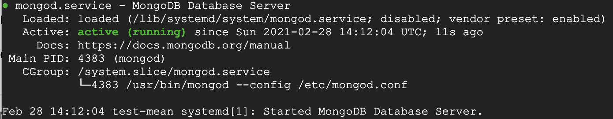45. You can optionally ensure that MongoDB will start following a system reboot by issuing the following
command:
sudo systemctl enable mongod
46. Stop MongoDB: sudo systemctl stop mongod
47. Restart MongoDB: sudo systemctl restart mongod
48. Begin using MongoDB: mongo
49. Returns a document that provides an overview of the database process’s state: db.serverStatus()
50. To exit MongoDB: exit
(Here is additional command to test if your MongoDB is working correctly)
1. Begin using MongoDB: mongo
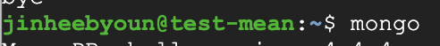2. To switch to the test database: use test
(If the database exists, it will switch context to that database.
If it doesn't it will create the database and switch contexts.
Let's create a database called "test.")
3. To verify that your database is now “test”: db
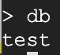4. Insert a Single Document:
db.inventory.insertOne(
{ "item" : "canvas",
"qty" : 100,
"tags" : ["cotton"],
"size" : { "h" : 28, "w" : 35.5, "uom" : "cm" }
}
)
(Unlike SQL tables, MongoDB collections have dynamic schemas.
That is, a single collection can store documents that differ in shapes
(i.e. contain different fields and value types).
5. To view the data: db.inventory.find()
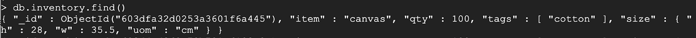6. Now that you have data, you can exit MongoDB: exit